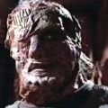
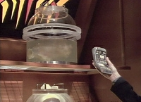
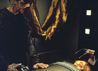
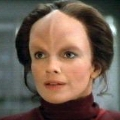
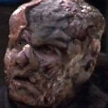

|


Referncias:
| Episdio | Ano |
| Phage (Voyager) |
2371 |
| Faces (Voyager) |
2371 |
| Lifesigns (Voyager) |
2371 |
| Deadlock (Voyager) |
2372 |
| Resolutions (Voyager) |
2372 |
| Coda (Voyager) |
2373 |
| Think
Tank (Voyager) |
2375 |
| Fury (Voyager) |
2376 |
Marcos histricos:
| 2371 Primeiro contato com seres humanos. Um tripulante da USS Voyager atacado e tem seus pulmes extrados por indivduos da espcie 2372 2375 |
|
 VidiiansVidiians
Histria Por mais de 2000 anos, os Vidiians sofreram de uma doena conhecida por Fagia ("Phage"), cujo vrus causador - altamente resistente e mutagnico - destri o cdigo gentico e estruturas celulares das vtimas. Onde antes havia pequenos focos da enfermidade, desencadeou-se uma epidemia generalizada que praticamente desintegrou toda a sociedade.  No entanto, com a destruio trazida pelo vrus, transformaram-se em caadores de rgos sem escrpulos. Passaram a atacar naves aliengenas para extrair partes de organismos vivos, praticamente se esquecendo (ou ignorando) as implicaes morais dos seus atos.
A cura para a Fagia s foi descoberta no ano de 2375, por um grupo conhecido como "Think Tank", encontrado pela Voyager a milhares de anos-luz de distncia do territrio Vidiian.
Entretanto, membros
saudveis da espcie, livres da doena, assemelham-se muito aos
humanos. H rgos similares, que desempenham funes tambm
iguais. Alm disso, as duas raas dividem uma aparncia fsica
externa bastante semelhante. At a descoberta da cura, o sistema imunolgico Vidiian no conseguia adaptar-se doena. Indivduos da espcie acostumaram-se a extrair rgos dos mortos. Mas, como nem sempre o procedimento era eficaz, medidas mais agressivas eram tomadas. A nave perdida da Federao encontrou diversas vezes essa sociedade fragilizada, numa poca em que a doena ainda existia. Era um perodo em que Vidiians atacavam outras espcies para remover rgos saudveis. Sobre a estrutura social, pouco se conhece. Sabe-se que cada Vidiian tem um honata, isto , um indivduo cuja tarefa encontrar rgos para outro.    |
 O
primeiro contato com seres humanos ocorreu no ano 2371 (data
estelar 48532.4), quando um tripulante da USS Voyager foi atacado
e teve seus pulmes cirurgicamente extrados. A partir de ento,
a nave, perdida no quadrante Delta, passou a ser vista como um
grande e atraente banco de rgos espacial. Diversos foram os
confrontos, alguns dos quais com graves conseqncias para a
tripulao isolada da Frota Estelar.
O
primeiro contato com seres humanos ocorreu no ano 2371 (data
estelar 48532.4), quando um tripulante da USS Voyager foi atacado
e teve seus pulmes cirurgicamente extrados. A partir de ento,
a nave, perdida no quadrante Delta, passou a ser vista como um
grande e atraente banco de rgos espacial. Diversos foram os
confrontos, alguns dos quais com graves conseqncias para a
tripulao isolada da Frota Estelar.